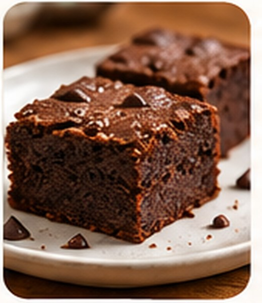

Mais segurança
Ajuda a identificar ingredientes e riscos que precisam ser esclarecidos com o estabelecimento.
CARDÁPIO INCLUSIVO · NOSSA CAUSA
É um cardápio que informa, de forma clara e acessível, os ingredientes, alergênicos presentes e adaptações possíveis, ajudando pessoas com alergias, intolerâncias e outras restrições alimentares a fazer escolhas mais informadas.
Ajuda a identificar ingredientes e riscos que precisam ser esclarecidos com o estabelecimento.
Permite consultar informações antes de decidir o que pedir.
Facilita a convivência de quem possui restrições alimentares.
Nosso foco são alergias, intolerâncias e condições de saúde que exigem cuidados alimentares. Um cardápio inclusivo não se resume a oferecer pratos vegetarianos ou veganos. Sem leite e derivados, sem lactose e sem glúten são declarações diferentes e exigem atenção ao preparo.
VEJA NA PRÁTICA
Marque o que precisa evitar e veja como as informações ajudam a analisar cada prato. Os produtos são fictícios.

Ingredientes: Frango, arroz, alface, cenoura, tomate, azeite, sal e ervas. Molho: contém ovos.
Adaptação possível: solicitar sem molho (sujeito à confirmação).

Ingredientes: Abóbora, frango desfiado, cebola, alho, azeite, sal e temperos naturais.
Adaptação possível: solicitar sem alho ou cebola.

Ingredientes: Cacau, farinha de arroz, açúcar, ovos, óleo vegetal e fermento.
Adaptação possível: versão sem ovos somente sob consulta.
Não há opções neste exemplo que atendam a todos os filtros selecionados. Consulte o estabelecimento sobre alternativas e preparo.
Atenção: os selos mostram somente ingredientes informados neste exemplo. Não comprovam ausência de contato cruzado, nem segurança para alergias graves ou doença celíaca. Antes de consumir, confirme ingredientes, utensílios e procedimentos com o estabelecimento. Sem glúten na receita não significa necessariamente seguro para celíacos.
UMA FERRAMENTA A SERVIÇO DA CAUSA
Disponibilizamos também uma ferramenta para criar um cardápio por empresa, informar ingredientes e adaptações e solicitar avaliação como parceiro. A adesão à ferramenta é opcional.
OPCIONAL · FERRAMENTA PARA ESTABELECIMENTOS
A causa é nosso propósito. Para estabelecimentos que desejarem utilizar nossa ferramenta digital, estes são os valores propostos. O uso não é obrigatório para apoiar o movimento. O enquadramento depende da análise das opções, ingredientes e cuidados declarados pelo estabelecimento.
Para restaurantes que disponibilizam adaptações, como a retirada de ingredientes alergênicos quando isso for viável e avaliado com os devidos cuidados de preparo.
Solicitar avaliação →Para restaurantes que fazem adaptações e também oferecem opções específicas sem leite e derivados e sem glúten, com procedimentos avaliados para o público a que se destinam.
Solicitar avaliação →Possibilidade de isenção para estabelecimentos com compromisso ampliado e comprovado com a inclusão alimentar. A concessão não é automática: depende de avaliação e aprovação da administração.
Solicitar avaliação →Importante: “sem leite”, “sem lactose” e “sem glúten” são condições diferentes. Retirar ingredientes não comprova ausência de alérgenos ou segurança para pessoas com doença celíaca; avaliação do preparo, utensílios e contato cruzado é indispensável. Os planos ainda não possuem cobrança automática ativa, e a ferramenta está em fase de implementação e testes.
PARTICIPE DA MUDANÇA
Estabelecimentos podem solicitar a avaliação para usar a ferramenta. Consumidores podem conhecer nossa causa e as propostas de inclusão alimentar.